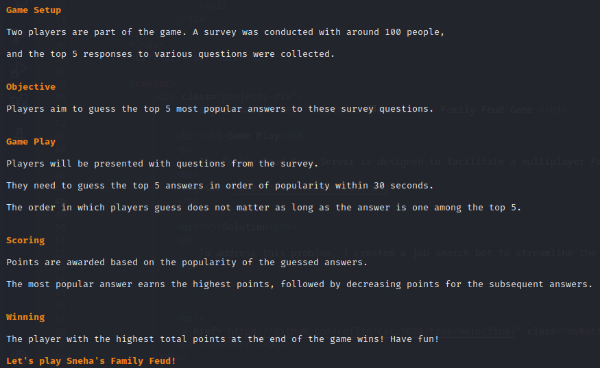
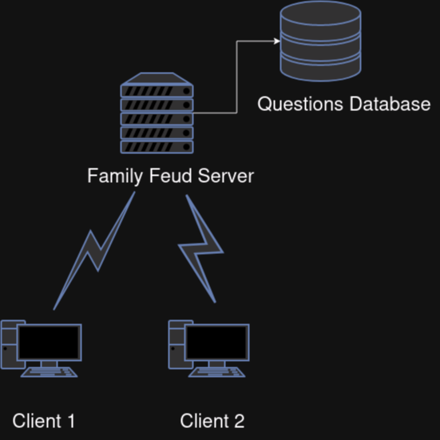
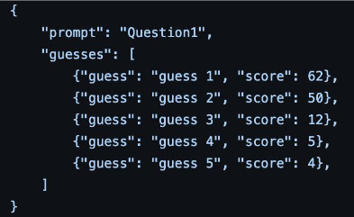

Type 'telnet 54.193.141.149 5020' on your terminal
Sorry! This game is under maintenance..
"Code is like humor. When you have to explain it, it’s bad." -Cory House
Who says we can't have a little fun with Python, huh?
Story time! So, my husband and I are huge Family Feud enthusiasts. You know, that
awesome TV show with Steve Harvey? Well, as much as we'd love to have Steve drop by and
host a game night at our place, it's not in the cards.
So, we decided to bring the Feud to us and hit up Target for the board game.
Turns out, the board game requires a minimum of three players (1 host and 2 players).
In the mission of finding a 2 player Family Feud game where a computer can be our host,
we found arkadium.com which has an online version of Family Feud. But here's the catch –
you can't pick your opponent. It's a random match-up every time.
Can I automate this in a way where a computer can be a host and 2 players get the same question
exactly at the same time with Python? Heck yes!
Before we start coding, the first step is to understand the game play.

2 players need to get the same question exactly at the same time.
I could write a python code, build the game logic and have 2 clients run the python code at the same time.
However, it leaves to the possibility of human errors. Further, I don't want to give clients the power to
control the code.
To address the challenges above, I decided to go with a client-server architecture.

Server Setup
The server runs as a system service named "family_feud.service" on an AWS EC2 instance. It listens
for incoming connections on port 5020.
Communication
I'm using sockets for communication between the server and clients. Clients connect to the server
via telnet.
Database Integration
A MySQL database stores questions, answers, and corresponding score values. The server connects
to the database to retrieve and manage questions during gameplay.
Multi Threading
Every connected client is managed in its individual thread, enabling the server to handle multiple
connections concurrently. Additionally, the implementation incorporates a barrier feature in multi-threading.
When a thread is executed, it pauses to allow all other threads to complete their execution. This ensures
effective synchronization, particularly in managing the flow of questions during gameplay.
Question Selection
Questions are selected from the database. The server ensures questions are not reused until the
entire set has been exhausted. Each question is stored as a dictionary in the database. The guesses and the scores
are stored as a list of dictionaries. Here's how it is retrieved:

Scoring Mechanism
The scoring mechanism is based on the player's guesses compared to the survey's top answers.
Retrieves the points from the SQL database.
Continuous Integration and Deployment
The server code is set up as a service, ensuring it remains "always-on". Automatic updates are pulled
from my Git repository every minute using a cron job, keeping the game up-to-date.
Alright! Now that we have the architecture, let's talk code now.
Libraries used
socket: Provides low-level networking operations, and it is used here to create server and client sockets for communication over the network.
threading: Used to handle multiple clients simultaneously, ensuring that the server can interact with multiple players without blocking.
sqlite3: Used here for interacting with an SQLite database named questions.db. The database contains questions and their corresponding answers for the Family Feud game.
loguru: For storing log information in a file in the game server.
This is to synchronize access to shared resources, ensuring thread-safe operations, particularly when updating player scores.
handle_client: Function responsible for managing communication with a connected client.
client_socket: The socket object representing the client's connection.
clients: List of connected clients.
barrier: Synchronization barrier for coordinating game flow between players.
- Sends a welcome message to the client and prompts for the client's name.
- Receives and logs the client's name, then adds the client to the list of connected clients.
- Waits for another player to join using a synchronization barrier.
- Sends a starting game message to both players.
This function handles the initial setup and ongoing communication with a single connected client. It forms the core logic for managing gameplay between the server and clients.
This part of the code handles the main gameplay loop for each client. Let's break it down:
Sending Questions to the Client
A loop runs five times, representing five rounds of questions.
Inside the loop, a random question is retrieved using the get_next_question() function.
The question is sent to the client along with the question number.
The server then waits for the client's response.
Receiving and Processing Client's Guesses
For each question, the server simulates receiving the client's guesses for up to five attempts.
The server waits for the client's guess, allowing up to 30 seconds for each guess.
If the client doesn't respond within the time limit, a message is sent indicating that time's up, and the server moves to the next question.
Scoring and Feedback
After receiving the client's guesses, the server calculates the score for the question using the calculate_score() function.
The server updates the player's score accordingly.
Feedback is sent to the client regarding their score for the current question and their total score so far.
Synchronization and Progression
After processing a question, the server waits for all players to finish before moving to the next question. This is achieved using the synchronization barrier.
Final Score and Farewell
Once all questions have been answered, the server sends the client their final score.
A farewell message is sent to the client, indicating the end of the game.
Error Handling and Cleanup
The code is wrapped in a try-except block to handle any exceptions that may occur during gameplay.
If an error occurs, the traceback is printed, and an error message is logged.
Finally, the client socket is closed to release the connection resources.
Input Parameter:
used_questions: A list containing prompts of questions that have already been used.
Database Connection
The function establishes a connection to the SQLite database file named "questions.db".
SQL Query Execution
An SQL query is executed to retrieve all questions from the "questions" table in the database.
Conversion to Dictionaries
The fetched rows (questions) are converted to dictionaries for easier access. Each dictionary represents a single question.
Filtering Available Questions
The function filters out questions that have already been used by comparing their prompts with the used_questions list.
Handling Exhausted Questions
If all questions have been used, the used_questions list is cleared to reset it, and all questions become available again.
Selecting the Next Question
The next question is selected from the available questions list using modular arithmetic to cycle through the questions.
Updating Used Questions
The prompt of the selected question is added to the used_questions list to mark it as used.
Database Connection Closure
Once the question is retrieved, the database connection is closed to release resources.
Return Value
The selected question is returned to the caller for further processing.
Input Parameters:
question: A dictionary containing the question data retrieved from the database. It typically includes the prompt and possible answers with their corresponding scores.
guesses: A list of guesses provided by the player for the current question.
Initialization
The variable score is initialized to 0. This variable will hold the total score accumulated based on the player's guesses.
Iterating Over Guesses
The function iterates over each guess provided by the player.
Iterating Over Possible Answers
Within each guess loop, the function iterates over possible answers for the question. These answers are typically labeled as guess1, guess2, ..., guess5.
Matching Guesses
For each guess, the function checks if it matches any of the possible answers. It does this by comparing the guess (after stripping whitespace and converting to lowercase) with the values stored in the question dictionary.
Calculating Score
If a match is found, the corresponding score for that answer is added to the total score.
Logging
The correct answer for each guess and the total score calculated for the question are logged using the logger module.
Return
Finally, the function returns the total score calculated for the question.
This main() function serves as the entry point of the program. Let's break down its components:
@logger.catch()
This is a decorator from the loguru library used to catch exceptions and log them. Any exceptions that occur within the main() function will be logged automatically.
Server Socket Creation
server_socket = socket.socket(socket.AF_INET, socket.SOCK_STREAM): Creates a server socket using the TCP/IP protocol (socket.SOCK_STREAM) and IPv4 addressing (socket.AF_INET).
SERVER_IP = "0.0.0.0" and SERVER_PORT = 5020: Specifies the IP address and port number on which the server will listen for incoming connections.
Binding and Listening
server_socket.bind((SERVER_IP, SERVER_PORT)): Binds the server socket to the specified IP address and port.
server_socket.listen(2): Starts listening for incoming connections. The 2 argument specifies the maximum number of queued connections.
Logging
logger.info(f"Server listening on {SERVER_IP}:{SERVER_PORT}"): Logs a message indicating that the server is listening on the specified IP address and port.
Handling Incoming Connections
The program enters a loop to continuously accept incoming client connections using server_socket.accept().
Upon accepting a connection, it prints a message indicating the connection's source address.
It then starts a new thread using threading.Thread() to handle the client, passing the handle_client function as the target. It also passes the client socket, list of clients, and synchronization barrier as arguments to the handle_client function.
If two clients have connected (as indicated by the length of the clients list), it resets the synchronization barrier for the next round of the game.
Exception Handling
The try block catches any exceptions that might occur during execution, such as errors in accepting connections or handling clients. If an exception occurs, it prints an error message.
The finally block ensures that the server socket is closed regardless of whether an exception occurred. This is important for cleaning up resources and releasing the port.
Overall, this main() function sets up the server, listens for incoming connections, and spawns threads to handle each client connection concurrently, allowing for multiplayer functionality in the game.
My husband and I now enjoy seamless rounds of Family Feud without any hiccups. I just built my own little Steve Harvey (only a little less fun than him, duh!). The beauty of programming lies not only in its logic but also in the joy it brings. As I mentioned at the beginning of this blog, who says we can't have a little fun with Python, huh?